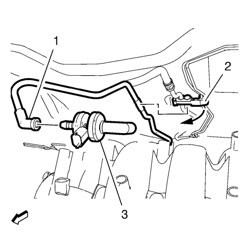
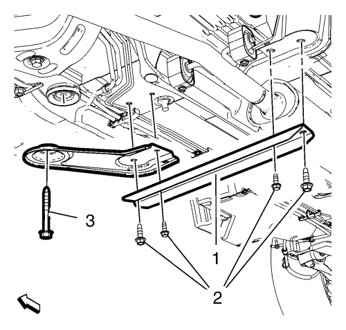
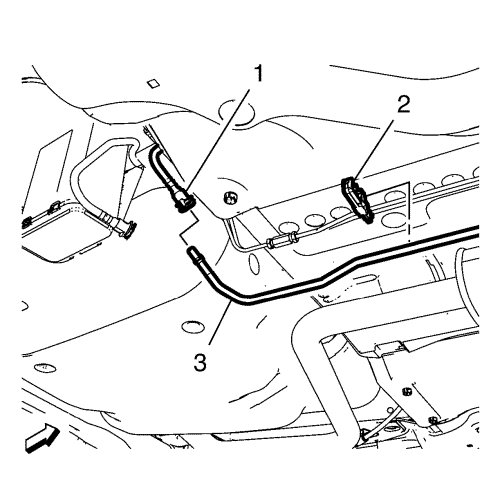
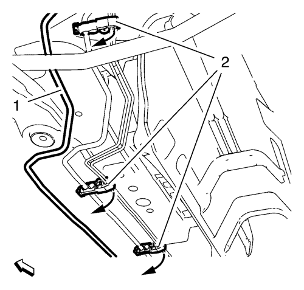

Sustitución del tubo de ventilación del depósito de combustible
Herramientas especiales
EN-6015 Tapón de cierre
Si desea informarse sobre herramientas regionales equivalentes, consultar Herramientas especiales .
Procedimiento de desmontaje
Advertencia: La gasolina o los vapores de gasolina son muy inflamables. Puede producirse un incendio si existe una fuente de chispa. Nunca vacíe o almacene gasolina o combustible diesel en un recipiente abierto debido al riesgo de explosión o incendio. Disponga de un extintor de incendios químico seco (clase B) en las proximidades.
Advertencia: Cuando manipule combustible, lleve siempre gafas protectoras para proteger sus ojos de posibles salpicaduras.
- Abra el capó.
- Desconecte el cable negativo de la batería. Consultar Desconexión y conexión del cable negativo de la batería .

- Retire el tubo de ventilación del depósito de combustible (1) de la válvula solenoide de purga del depósito antiimpurezas de emisión de vapores (3).
- Cierre el tubo de ventilación del depósito de combustible con el tapón de cierre EN-6015.
- Suelte el tubo de ventilación del depósito de combustible (1) del clip del tubo de combustible y del freno (2).
- Elevar el vehículo y soportarlo de manera segura. Consultar Elevación y soporte en alto del vehículo .

- Retire los tornillos de soporte de la suspensión del tren anterior y el soporte de suspensión delantero del tubo de escape (2).
- Retire el tornillo del bastidor de la suspensión del tren anterior y del tren de rodaje (3).
- Retire el soporte del bastidor de la suspensión del tren anterior y del tren de rodaje.

- Suelte el tubo de ventilación del combustible (3) del clip del tubo de combustible y del freno trasero (2).
- Desemborne el conector del tubo de ventilación del combustible del depósito de emisión de vapores (1) del tubo de ventilación del depósito de combustible (3). Consultar Servicio del adaptador de conexión rápida del collarín plástico .
- Tape el tubo de ventilación del depósito de combustible y el tubo de ventilación del combustible del depósito de emisiones con tapones EN-6015.

- Suelte el tubo de ventilación del depósito de combustible (1) de los otros 4 clips del tubo de combustible y del freno (2).
Nota: No doble el tubo de ventilación del depósito de combustible.
- Retire el tubo de ventilación del depósito de combustible (1).
Procedimiento de montaje
Nota: No doble el tubo de ventilación del depósito de combustible.
- Monte el tubo de ventilación del depósito de combustible (1).
- Fije el tubo de ventilación del depósito de combustible (1) con los 4 clips del tubo de combustible y del freno (2).
- Retire los tapones de cierre EN-6015 del tubo de ventilación del combustible del depósito de emisiones (1) y del tubo de ventilación del depósito de combustible (3).
- Emborne el tubo de ventilación del combustible (3) al tubo de ventilación del combustible del depósito de emisiones (1). Consultar Servicio del adaptador de conexión rápida del collarín plástico .
- Monte el soporte del bastidor de la suspensión del tren anterior y del tren de rodaje.
Precaución:Consulte Precaución con las fijaciones en la sección Prólogo.
Nota: NO reutilice pernos viejos.
- Monte el tornillo NUEVO del bastidor de la suspensión del tren anterior y del tren de rodaje (3) y apriételo a 160 N·m (118 lib. pie).
- Monte los tornillos del soporte de suspensión delantero del tubo de escape (2) - M8 y apriételos a 20 N·m (15 lib. pie).
- Monte los tornillos NUEVOS del soporte de la suspensión del tren anterior (2) - M10 y apriételos a 60 N·m (44 lib. pie).
- Bajar el vehículo.
- Retire el tapón de cierre EN-6015 del tubo de ventilación del depósito de combustible (1).
- Monte el tubo de ventilación del depósito de combustible (1) en la válvula solenoide de purga del depósito antiimpurezas de emisión de vapores (3).
- Fije el tubo de ventilación del depósito de combustible (1) con el clip del tubo de combustible y del freno (2).
- Conecte el cable negativo de la batería. Consultar Desconexión y conexión del cable negativo de la batería .
- Cierre el capó.
| © Copyright Chevrolet. All rights reserved |